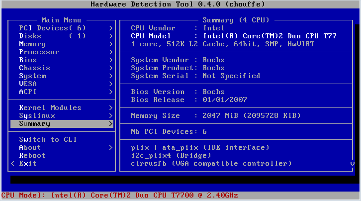

HDT - Hardware Detection Tool
Table of Contents
What is HDT?
HDT (stands for Hardware Detection Tool) is a Syslinux com32 module that displays low-level information for any x86 compatible system. It provides both a command line interface and a semi-graphical menu mode for browsing.
Documentation
How can I start HDT ?
Usage per subsystem
HDT can inspect multiple subsystems:
- CPU
- PCI devices
- Memory
- DMI
- Memory modules
- BIOS
- Motherboard
- IPMI base board (XXX Anyone with screenshots?)
- Chassis
- Batteries (XXX Anyone with screenshots?)
- CPU
- System
- Security
- System reset (XXX Anyone with screenshots?)
- Disks
- Syslinux
- Linux Kernel modules needed by this host
- PXE environment
- VESA
Dumping hardware Information
HDT is able to dump hardware information, please consult the Dump page
Boot parameters
HDT feature some boot parameters to control its behavior.
- Defining the pci.ids path
- Defining the modules.pcimap path
- Defining the memtest entry
- Disabling the menu mode
- Executing automatic commands
- Dumping parameters
Downloads
The latest version of HDT can be found in the Syslinux tarball under com32/hdt/hdt.c32. Source code and official builds can be downloaded in .tar.gz, .tar.bz2, and .zip formats from kernel.org.
Builds of the HDT module can also be found below.
Testing
- Nothing for today
Stable
Current release
- 0.5.2 | com32 module | 1.44MB floppy image | Bootable ISO image | 1.44MB gzipped floppy image | Checksums |
Previous releases
- hdt-0.5.0
- hdt-0.4.0
- hdt-0.3.6
- hdt-0.3.5 for Syslinux 3.83
- hdt-0.3.4 for Syslinux 3.83
- hdt-0.3.3 for Syslinux 3.75
- hdt-0.3.2 for Syslinux 3.75
- hdt-0.3.1 for Syslinux 3.75
Previous Syslinux releases
- Syslinux 3.83 is featuring HDT 0.3.1
- Syslinux 3.75 is featuring HDT 0.2.7 with a fix to prevent hard lock during pci detection
- Syslinux 3.74 is featuring HDT 0.2.7
Unstable
These are NOT suited for production.
- None
Source
The official, latest and stable code is available in the Syslinux tree syslinux.git, under /com32/hdt.
Development is active in the following trees:
Screenshots

Menu displaying system summary
Command line interface inspecting disks
Summary mode from menu while using a real serial interface
Projects known to use HDT
- Boot Kernel.org
- Mandriva Linux since 2009.1
- Ultimate boot CD since version 5.0
- Parted Magic since 0.4.0
- Rescue Is Possible since 8.0
- Netboot me
- grml
- g4l
- slitaz
- Finnix since release 101
- ArchLinux
- Free Geek Twin Cities ( A video showing HDT in action)
- Any other ? Please tell us.
Public Presentations
- Kernel Recipes 2012 : Download the presentation
IRC Channel
Developers are usually around on the the #syslinux and #hdt channels of the Freenode network (irc.freenode.net). Feel free to join us for open discussions.
Mailing List
The official mailing-list is hdt@zytor.com.
Please submit HDT patches to this mailing-list. syslinux@zytor.com should be CC: for integration patches with Syslinux.
Resources
Team
- Erwan Velu (Project Leader)
- Pierre-Alexandre Meyer (Core developer)
- Gert Hulselmans (Testing)
- Alexander Andino (Design & Art)
Attachments
-
hd-menu-0.3.3.png
 (14.9 KB) - added by erwan
7 years ago.
(14.9 KB) - added by erwan
7 years ago.
hdt menu 0.3.3
-
disks-detection.png
(17.2 KB) - added by pierre
6 years ago.
Disks detection (command line)
-
HDT-0.3.5-pre1.png
(16.4 KB) - added by erwan
6 years ago.
HDT Menu
-
HDT-0.3.5-pre2.png
(13.4 KB) - added by erwan
6 years ago.
HDT 0.3.5-pre2 menu
-
hdt-0.3.5.iso
(1.9 MB) - added by erwan
6 years ago.
-
hdt_0_3_5.c32
(153.4 KB) - added by erwan
6 years ago.
-
hdt-0.3.5.img
(2.8 MB) - added by erwan
6 years ago.
-
hdt-0.3.5.img.gz
(327.8 KB) - added by erwan
6 years ago.
-
hdt-summary-view.png
(13.4 KB) - added by erwan
6 years ago.
-
hdt-serial.png
(47.9 KB) - added by erwan
6 years ago.
hdt serial output
-
hdt-0.4.0.png
(11.3 KB) - added by erwan
5 years ago.
-
HDT-KR2012.pdf
(196.5 KB) - added by erwan
4 years ago.


{kind=link}
{kind=link}
{kind=link}
{kind=link}
{kind=link}
{kind=link}
{kind=link}